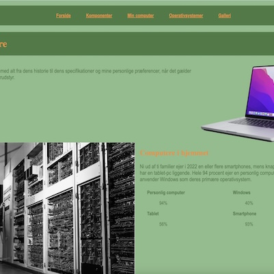
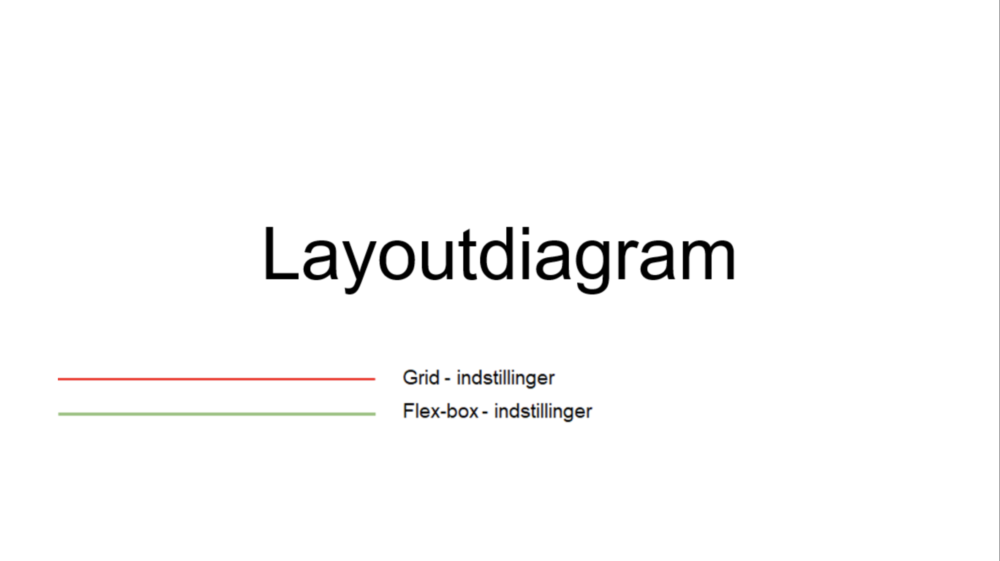
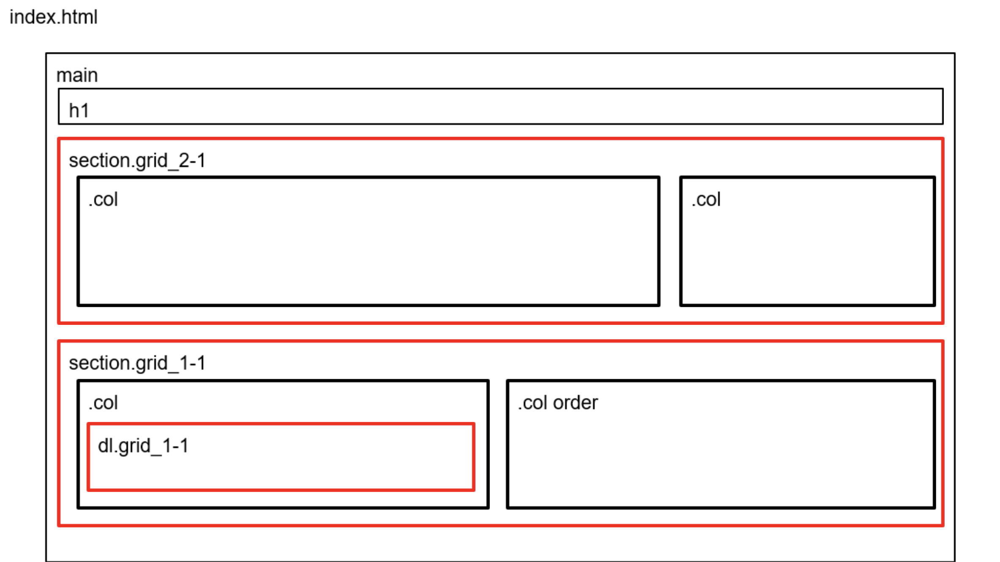
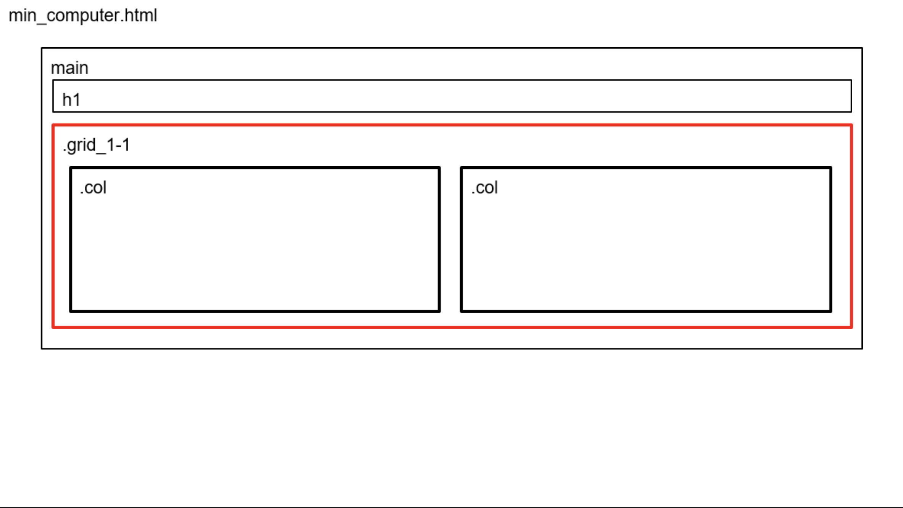
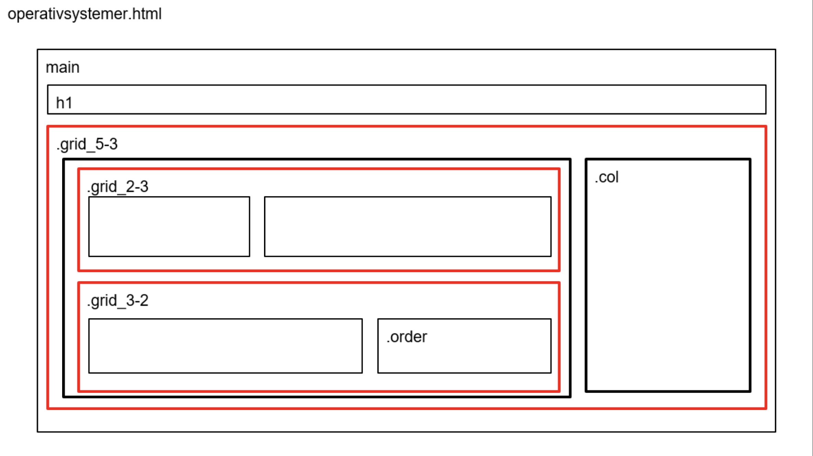
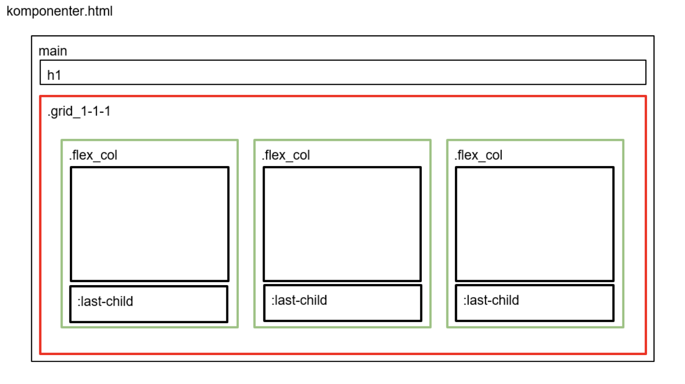
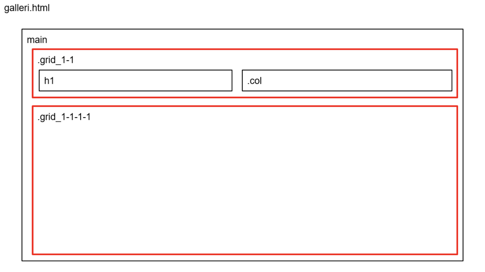

T E M A 2
GRUNDLÆGGENDE WEB
I tema 2 handlede det om at løse studiestartsprøven. I dette tema skulle vi lære at forstå samt bruge et wireframe og layoutdiaram. Vi startede dermed at skulle kode mobil sitet først, hvor vi senere byggede videre til at udvikle desktop version, her lærte vi samtidig om brugen af et responsivt design. Mine kompetencer indenfor kodning blev stærkere af arbejdet med html og css.
Mere informationLINK TIL HJEMMESIDE
MERE INFORMATION
LAYOUTDIAGRAM





